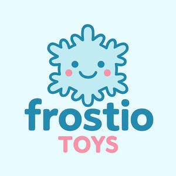

Trade Mark Journal No.2025/029 18 July 2025
UK00004230834 8 July 2025 (28)

- Class 28
- Toys; Toys, games, and playthings; Toys and playthings for pets; Ride-on toys; Cuddly toys; Puzzles [toys]; Toys for sandpits; Plush toys; Stuffed toys; Inflatable toys; Toys for babies; Noisemakers [toys]; Toys for pets; Wind-up toys; Fidget toys; Toys for use in perambulators; Radio-controlled toys; Plastic toys; Crib toys; Scooters [toys]; Toys for animals; Mobiles [toys]; Toys, games and playthings for pet animals; Pet toys; Windup toys; Rattles [toys]; Toys for cats; Toys for infants; Wooden toys; Model cars [toys or playthings]; Toys and playthings for pet animals; Toys for dogs; Toy dolls; Educational toys; Bendable toys; Outdoor toys; Toy playsets; Models being toys; Bath toys; Infant toys; Dog toys; Sandbox toys; Electronic toys; Action figures [toys or playthings]; Bathtub toys; Whistles [toys]; Sand toys; Inflatable ride-on toys; Soft toys; Controllers for toys; Miniature car models [toys or playthings]; Drones [toys]; Bouncing toys; Cloth toys; Tricycles for infants [toys]; Toy figurines; Musical toys; Toy furniture; Mechanical toys; Toys for birds; Play mats for use with toy vehicles [playthings]; Wheeled toys; Clockwork toys; Developmental toys; Crib mobiles [toys]; Fluffy toys; Plastic toys for use in the bath; Stuffed animals [toys]; Inflatable bath toys; Stacking toys; Fabric toys; Rocking toys; Modular toys; Plastic models being toys; Water toys; Model toys; Whack-a-mole toys for pets; Play mats incorporating infant toys [playthings]; Drawing toys; Toy prams; Action toys; Stuffed and plush toys; Battery-operated action toys; Stuffed plush toys; Plush stuffed toys; Sketching toys; Children's toys; Squeezable squeaking toys; Toy bicycles; Smart toys; Plastic character toys; Whistling toys; Toy tableware; Construction toys; Clockwork toys [of plastics]; Push toys; Articles of clothing for toys; Toy wheelbarrows; Squeeze toys; Talking toys; Toy bakeware and toy cookware; Toy mobiles; Bendy balls being toys; Toy xylophones; Clothing for toy figures; Toy animals; Chewing toys for parrots; Stuffed bean-filled toys; Pull toys; Toy cars; Toy strollers; Toys for pet animals; Toy scooters; Water-squirting toys; Assembly toys; Toy balloons; Intelligent toys; Toy hats; Toy cookware; Music box toys; Punching toys; Toy harmonicas; Toy automobiles; Smart plush toys; Toy robots; Toy tools; Toy weapons; Toys in the form of puzzles; Xylophones being musical toys; Novelty toys for parties; Soft sculpture toys; Toy glockenspiels; Costumes being childrens playthings; Inflatable pool toys; Toy bakeware; Toy pushchairs; Money guns being toys; Puzzle mats [toys]; Toy airplanes; Toy balls; Playthings; Toy vehicles.
Zip Cart Trading Private Limited